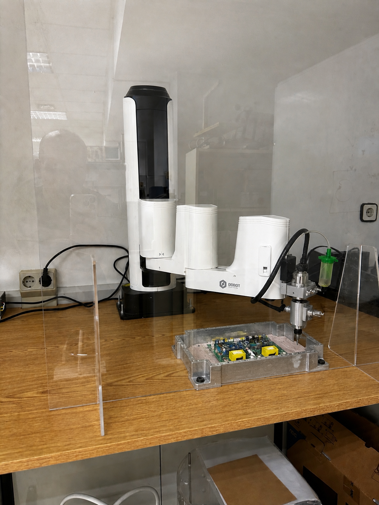

LABORATORIO REMOTO - DOBOT M1

El DOBOT M1 es un brazo robótico SCARA (Selective Compliance Assembly Robot Arm) de 4 ejes orientado al mercado industrial ligero. Soporta programación por enseñanza (teaching/playback), control por script Python, programación gráfica Blockly y clasificación inteligente. Su diseño integrado (controlador y driver en el propio robot, sin armario externo) simplifica la instalación. La carga nominal es 1,5 kg y la repetibilidad ±0,02 mm.
Técnicamente el DOBOT M1 tiene cuatro articulaciones: tres de revolución (J1, J2, J4) y una prismática lineal (J3, eje Z por tornillo de bolas). Los elementos mecánicos son: base, brazo trasero (Rear Arm), antebrazo (Forearm), eje Z y efector final. La comunicación con el PC se realiza por Ethernet (TCP/IP).
Tabla 1: Especificaciones técnicas del DOBOT M1.
| Parámetro | Valor |
| Tipo de robot | SCARA 4 ejes |
| Alcance máximo | 400 mm |
| Carga nominal | 1,5 kg |
| Repetibilidad | ±0,02 mm |
| Vel. máx. articular (J1, J2) | 180 °/s |
| Vel. máx. eje Z (J3) | 1000 mm/s |
| Alimentación | 100-240 V AC → 48 V DC |
| Comunicación | Ethernet, RS-232C |
| E/S digital | 22 salidas, 24 entradas, 6 ADC |
Tabla 2: Rango de movimiento de las articulaciones.
| Articulación | Tipo | Descripción | Límite mecánico | Límite software | Vel. máx. |
| J1 | Rotación horizontal | Brazo trasero (Rear Arm) | -90° / +90° | -85° / +85° | 180 °/s |
| J2 | Rotación horizontal | Antebrazo (Forearm) | -135° / +135° | -135° / +135° | 180 °/s |
| J3 | Lineal vertical (Z) | Eje Z - tornillo de bolas | 0 - 250 mm | 10 - 235 mm | 1000 mm/s |
| J4 | Rotación horizontal | Efector final (R-axis) | Ilimitado | -360° / +360° | 180 °/s |
Modos de movimiento: Jog cartesiano (X+/-, Y+/-, Z+/-, R+/-), jog articular (J1+/-, J2+/-, J3+/-, J4+/-), MOVJ (articular libre), MOVL (trayectoria recta), JUMP (puerta, pick & place), ARC y CIRCLE. La posición de home es (x=400, y=0, z=0, r=0) mm.